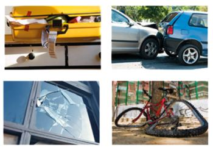
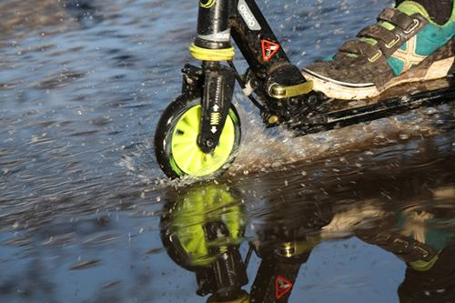

Opleiding tot Schadebehandelaar financieel advieskantoor
In samenwerking met Anita Hol – Bubeck heeft Bureau DFO de 7-daagse opleiding Schadebehandelaar financieel advieskantoor ontwikkeld. De opleiding richt zich op degene die bij financieel advieskantoren als (beginnend) schadebehandelaar alle voorkomende schades behandelt.
Artikelnummer . Bestellen en betalen gaat via de webshop op dfobv.nl.
Omschrijving

In samenwerking met Anita Hol – Bubeck heeftBureau DFO de zevendaagse opleiding Schadebehandelaar financieel advieskantoorontwikkeld.
Interview Anita Hol-Bubeck
In een openhartig interview vertelt Anita hoe zij de eerste groep van deze leergang heeft ervaren. Dit geeft je gelijk het gevoel wat je kunt verwachten als je deelneemt aan deze 7-daagse: Leren om beter te kunnen worden in het mooie vak van Schadebehandelaar.Lees hier het interview

Nieuwe data najaar 2026!
Waarom deze opleiding?
Financieel advieskantoren hebben voor hun relaties een belangrijke meerwaarde door te zorgen dat verzekerden die geconfronteerd worden met een schade, die vergoeding ontvangen waarop ze recht hebben. Dit recht kan ontstaan uit de verzekeringsovereenkomst van de relatie zelf of op grond van het verhaalsrecht op een aansprakelijke partij. Bij eventuele verschillen van inzicht tussen de bij de schade diverse betrokken partijen is het de taak van de adviseur om op te komen voor de gerechtvaardigde belangen van zijn relatie. Voor deze werkzaamheden van de adviseur was er geen specifieke opleiding. Die opleiding is er nu wel!
Zevendaagse opleiding
De opleiding vindt over 7 lesdagen verspreid plaats.
Kleine groep en intensieve persoonlijke aandacht
De opleiding vindt plaats in een kleine groep van maximaal 14 personen zodat er intensief aandacht is voor de individuele deelnemers.
In onderstaande korte film vertelt Anita Hol-Bubeck over de opleiding.
Doelgroep
Deze opleiding Schadebehandelaar is voor iedereen die al (jaren) werkt, of juist wil gaan werken als Schadebehandelaar bij een financieel advieskantoor.
Het kan zijn dat je bezig bent met de Wft schadeopleiding(en) of met een andere vakopleiding, of al jaren vakkennis hebt opgedaan in de praktijk. Deze opleiding richt zich vooral op de vaardigheden om de theorie toe te passen en te combineren met de te behandelen schades en deze beter en zelfstandiger te kunnen be- en afhandelen, om zo door te groeien tot professioneel schadebehandelaar.
Specifieke vooropleiding is niet vereist, maar kennis op het gebied van Wft schade particulier/zakelijk is wel wenselijk, of werkervaring in de financiële sector.
Wat kun je verwachten tijdens deze opleiding Schadebehandelaar?
- Deelnemers leren efficiënt en doelgericht te handelen na de melding van een schade, bij de uiteindelijke afwikkeling en bij het vaststellen en inzetten van de verhaalsmogelijkheden van de diverse soorten schades;
- Er wordt intensief gewerkt met praktijkvoorbeelden en bijbehorende polisvoorwaarden met daar waar nodig verzekeringstechnische en juridische onderbouwing;
- Er is veel aandacht voor de benodigde vaardigheden voor het voeren van correspondentie (per mail) en gesprekken met cliënten, tegenpartijen, experts en verzekeraars in algemene zin en in de situaties waarin de afhandeling van een schade moeizamer verloopt.
CASUS
Vraag
De zestienjarige Bart krijgt van zijn ouders 

Wie is of zijn aansprakelijk en op welke polis is er eventueel dekking?
Investering
Je investering bedraagt €299,30 per lesdag, vrijgesteld van btw. Uiteraard mag je ook de 7 lesdagen in een keer voldoen.
Agenda
Start september 2026
Donderdag 17 september 2026 9:30 – 17:00 uur
Maandag 5 oktober 2026 9:30 – 17:00 uur
Donderdag 29 oktober 2026 9:30 – 17:00 uur
Donderdag 12 november 2026 9:30 – 17:00 uur
Donderdag 26 november 2026 9:30 – 17:00 uur
Donderdag 10 december 2026 9:30 – 17:00 uur
Donderdag 17 december 2026 9:30 – 17:00 uur
Heb je interesse of wil je meer weten over de inhoud van deze opleiding, mail dan naar Agaat van Ekeren!Zij neemt graag contact met je op.
Of bekijk hier het complete aanbod opleidingen schade van Anita Hol-Bubeck
Passende opleidingen, masterclasses en documenten
Opleidingen van Bureau DFO
Praktijkgerichte trainingen, webinars en leergangen.
Meerdaagse training4-daagse opleiding Schade Zakelijk
Eerstvolgende: 11 mrt 2027 · Hoevelaken
Webinar DSA: uitleg bedrijfsregeling Directe schadeafhandeling
Data en locaties: zie het opleidingsportaal
Workshop Elektrische voertuigen regelgeving, schade en verzekeren
Data en locaties: zie het opleidingsportaal
Documenten & modellen
Direct toepasbaar in je praktijk, te bestellen in de webshop.
Naslagwerk